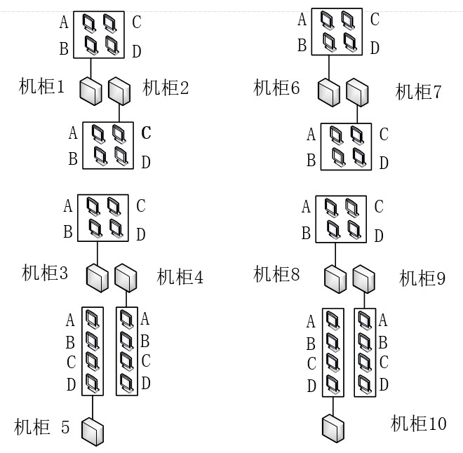
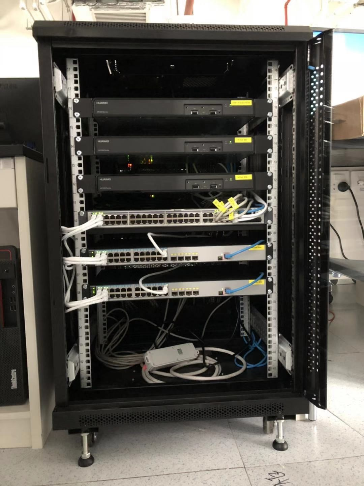
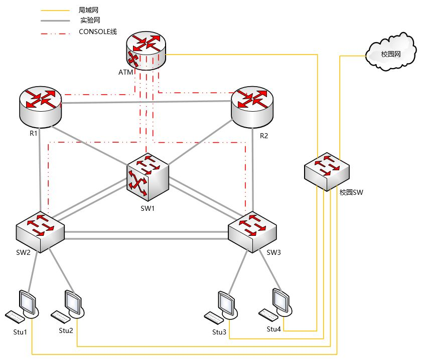

网络实验室简介
计算机网络实验室以小组为单位，共有10个小组。每次实验中每组最多支持4人，每人一台计算机，共用一个实验机柜，机柜中有一台ATM管理机、两台路由器、一台三层交换机和两台二层交换机。桌子和实验机柜并排一列，实验机柜居中。


本实验室选择了华为技术有限公司（简称华为）生产的交换机和路由器为主要设备。如下图所示，每一个实验机柜的设备由上至下放置分别为ATM管理机、R1路由器、R2路由器、SW1三层交换机、SW2二层交换机、SW3二层交换机。
机柜：


学生计算机配备有双网卡，其中一个网卡与校园网相接，另一个网卡连接机柜。学生计算机通过Telnet远程到实验机柜中的ATM管理机连接到对应的设备上，结合在计算机和网络设备上的操作，进行实验。实验室网络拓扑图（Console线表示路由器或交换机的配置）：


实验设备网络拓扑图：

在实验机柜内部，ATM管理机与两台路由器和三台交换机的console端口相连接，计算机通过对Telnet进行重定向，使用3001～3005接口，可分别访问R1、R2、SW1、SW2、SW3。学生进行组网配置时，只需要Telnet到ATM的IP地址，修改实验设备对应ATM远程端口（如下表所示），就可登陆到对应的路由器或交换机上进行实验，而不需要对路由器和交换机的console端口频繁地进行插拔线操作，也不需要频繁地搬动设备进行连线。
机柜编号 |
ATM管理路由器的IP地址 |
|---|---|
1 |
10.251.130.241 |
2 |
10.251.130.242 |
3 |
10.251.130.243 |
4 |
10.251.130.244 |
5 |
10.251.130.245 |
6 |
10.251.130.246 |
7 |
10.251.130.247 |
8 |
10.251.130.248 |
9 |
10.251.130.249 |
10 |
10.251.130.250 |
设备名称 |
端口号 |
|---|---|
R1路由器 |
3001 |
R2路由器 |
3002 |
SW1三层交换机 |
3003 |
SW2二层交换机 |
3004 |
SW3二层交换机 |
3005 |